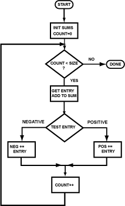

See below.
Next, set a flag (register $14) if the array entry is negative. Branch to the symbolic address neg if it is.
$14
neg
 ## Registers: ## $8 -- count ## $9 -- pointer to the array entry ## $10 -- current array entry ## $11 -- sum of all integers ## $12 -- sum of negative integers ## $13 -- sum of positive integers ## $14 -- pos. or neg. flag ## $15 -- SIZE of the array # while count < SIZE do loop: beq $8,$15,done sll $0,$0,0 # branch delay # get entry, add to sum lw $10,0($9) # get entry sll $0,$0,0 # load delay addu $11,$11,$10 # add to sum # test neg. or pos. slti $14,$10, # set flag if entry is neg bne $,$,neg # branch if negative sll $0,$0,0 # branch delay . . . . # branch for positive goes here neg: addiu $8,$8,1 # count++ addiu $9,$9,4 # point at next entry j loop sll $0,$0,0 # branch delay done: sll $0,$0,0 # target for branch .data size: .word 17 array: .word 12, -1, 8, 0, 6, 85, -74, 23, 99, -30, 30, 95, 4, 7, 10, 28, 14
Fill in the blanks.